Memory Lab — independent memory & brain-health news, guides and reviews
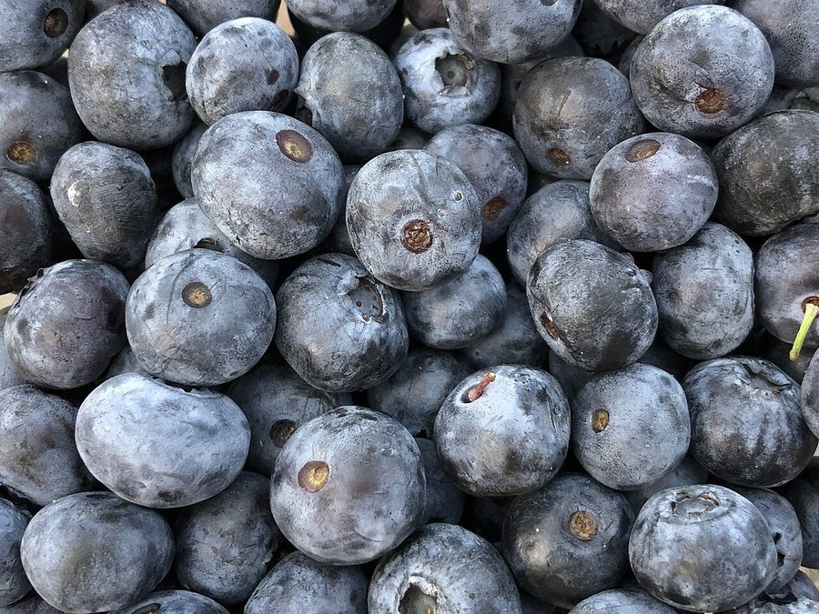
Selenium and Cognitive Function: What the Research Shows
Selenium supports the brain's antioxidant defenses and thyroid function. Here's what the evidence actually says about selenium, memory and cognitive decline.

The 5 Best Memory Support Formulas of 2026, Ranked & Reviewed
We put the most talked-about memory formulas head to head on ingredient transparency, clinical dosing, real customer reviews, and money-back guarantee. One came out clearly on top.
See the #1 pick & full ranking →Latest
Multilingual People May Have Brains Up to 13 Years Younger, Study Suggests
New research presented at a major European neuroscience conference links speaking multiple languages to a younger-looking brain on scans. Here's what it found.
Read more →Antidepressants and Memory: What to Know About Cognitive Side Effects
Depression itself affects memory, and so can some antidepressants. Here's what the research says about cognitive side effects, class by class, and what to do.
Read more →Do Statins Cause Memory Loss? What the Evidence Actually Shows
Statins carry an FDA memory-loss warning, but the research since is mixed. Here's what the evidence actually shows, and what to do if you're concerned.
Read more →Selenium and Cognitive Function: What the Research Shows
Selenium supports the brain's antioxidant defenses and thyroid function. Here's what the evidence actually says about selenium, memory and cognitive decline.
Read more →Memory & brain health
Standing Desks and Focus: Do They Really Help Concentration?
Standing desks promise sharper focus and less afternoon slump. Here's what the research actually shows about standing and attention at work.
Read more →Iron Deficiency and Brain Fog: The Overlooked Link
Low iron can leave you foggy and forgetful long before a doctor calls it anemia. Here's how iron shortfalls affect the brain, and what helps.
Read more →Does Hormonal Birth Control Affect Memory?
Some women notice foggier recall after starting the pill. Here's what the research actually shows about hormonal contraception and memory.
Read more →Low Testosterone and Memory in Men: What's the Link?
Foggy focus and slower recall can track with low testosterone in men. Here's what the evidence actually says, and what to do about it.
Read more →What Is Cognitive Reserve, and How Do You Build It?
Two brains can show the same age-related changes on a scan while one person stays sharp and the other struggles. Cognitive reserve is a big part of why.
Read more →Does Retirement Speed Up Cognitive Decline?
Leaving a career changes your days more than most people expect. Here's what the evidence actually says about retirement and your memory.
Read more →Blue Light and Brain Fog: Does Screen Time Affect Focus?
Screens take the blame for foggy afternoons and scattered focus. Here's what the evidence actually says about blue light, sleep and daytime thinking.
Read more →Does Journaling Improve Memory? What the Evidence Shows
Writing things down feels like it should help you remember them. Here's what research on expressive writing, note-taking and handwriting actually says.
Read more →The Vagus Nerve and Memory: How Gut-Brain Signaling Works
The vagus nerve links your gut, heart and brain in constant two-way conversation. Here's what the evidence says about its role in memory, stress and focus.
Read more →Chemo Brain: Why Cancer Treatment Affects Memory and Focus
Trouble concentrating or finding words during or after chemotherapy? Here's what chemo brain actually is, why it happens, and what helps.
Read more →Long COVID and Brain Fog: What the Research Has Found
Trouble concentrating, word-finding slips, a memory that feels slower than before. Here's what studies on long COVID and brain fog actually show, and what helps.
Read more →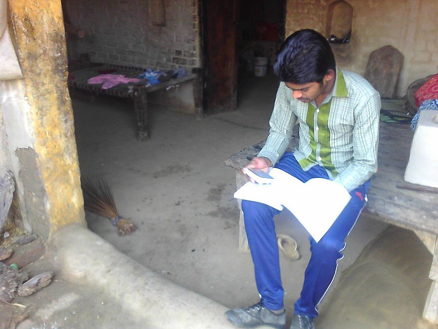
ADHD and Working Memory: Why Focus and Recall Struggle Together
ADHD isn't just a focus problem. Here's why working memory struggles so often come with it, and the strategies that actually help both.
Read more →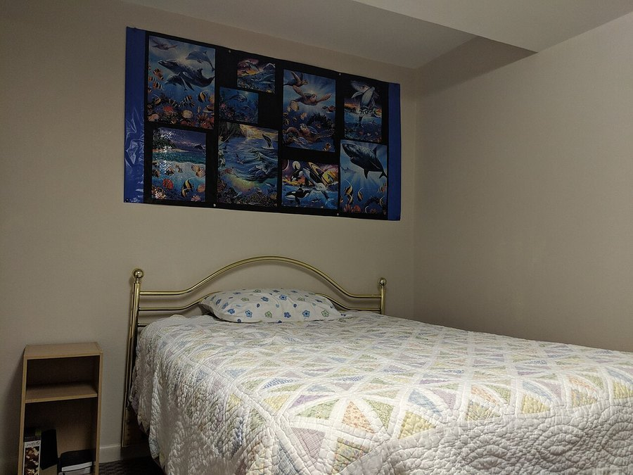
Postpartum Brain Fog: Why New Moms Forget Things
Forgetting words mid-sentence, walking into a room and blanking, losing your train of thought. Here's why postpartum brain fog happens and what actually helps.
Read more →Does Napping Improve Memory? What the Science Says
A well-timed nap can help lock in what you just learned. A poorly timed one can leave you groggy and disrupt your night. Here's what sleep research actually shows.
Read more →Hearing Loss and Dementia Risk: What the Evidence Shows
Untreated hearing loss ranks among the largest modifiable dementia risk factors identified so far. Here's why the link exists and what actually helps.
Read more →Menopause and Memory: Why Brain Fog Happens and What Helps
Menopause changes memory in specific, measurable ways. Here's which memory functions are affected and what the hormone therapy research actually shows.
Read more →Hydration and Cognitive Function: How Water Affects Focus
Fluid balance shapes attention, working memory and mood, often before thirst even shows up. Here's what the research says about water, electrolytes and clear thinking.
Read more →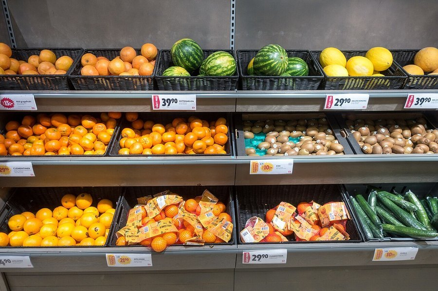
Blood Sugar Swings and Brain Fog: The Glucose Connection
That foggy, sluggish feeling an hour or two after a big meal isn't just in your head. Here's what happens to focus when blood sugar spikes and crashes, and the fixes that help.
Read more →Blood Test Tied to Alzheimer's Protein Predicts Decline a Decade Early
A study presented at AAIC 2026 and published in JAMA finds the p-tau217 blood biomarker forecasts cognitive decline risk years before symptoms appear.
Read more →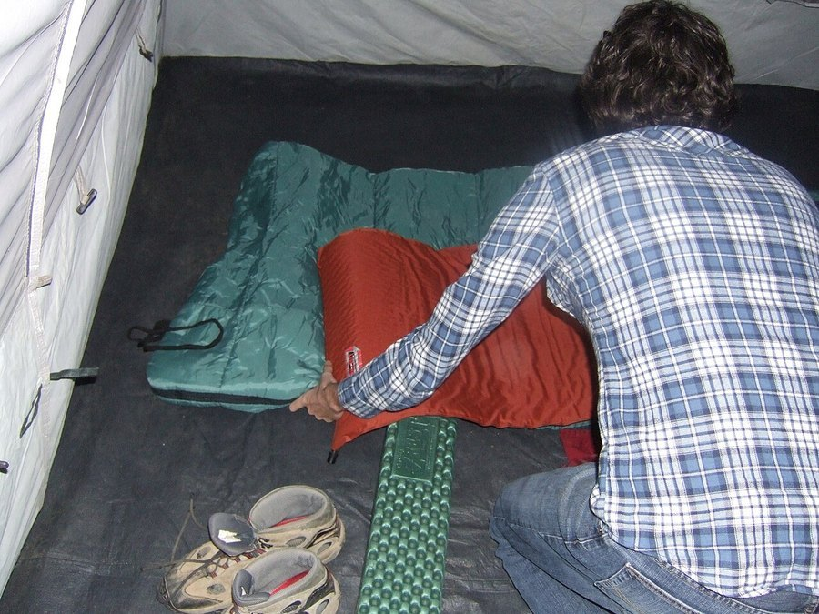
Alzheimer's Sleep Loss Traced to Brain Immune Cells, Not Plaques
A University of Kentucky study found removing the brain's overactive immune cells restored over two hours of deep sleep in Alzheimer's mice, even though amyloid plaques stayed put.
Read more →Why Multitasking Hurts Your Memory and Focus
Switching between tasks feels efficient, but it costs memory and accuracy. Here's what task-switching actually does to your brain.
Read more →Sleep and Memory: How the Brain Files What You Learn
Memory consolidation happens mostly during sleep, as the brain replays and files new information into long-term storage. Here's how that process works.
Read more →
How to Learn Faster: 7 Techniques Backed by Neuroscience
Speed in learning has little to do with talent. It comes from methods that match how memory works: active recall, spacing, interleaving, and focused practice.
Read more →
Reading and Brain Health: What Books Do for Your Memory
Regular reading exercises attention, language, and working memory simultaneously. Here's what research says about books and cognitive aging.
Read more →
Air Quality and Brain Fog: The Pollution Connection
Fine particle pollution doesn't stay in your lungs. Research links PM2.5 to neuroinflammation, brain fog, and accelerated cognitive decline. Here's what you can do.
Read more →
The Gut-Brain Connection: How Your Microbiome Affects Memory
The gut and brain communicate constantly through the vagus nerve, neurotransmitters, and the immune system. Here's what that means for your memory and focus.
Read more →
Cold Water Therapy and Brain Health: What the Evidence Actually Says
Cold water immersion triggers real physiological changes. But does the science support the bold claims? An honest look at what's proven and what isn't.
Read more →
How Social Connection Protects Your Brain as You Age
Loneliness is now a recognized dementia risk factor. Here's what decades of research show about the brain-protecting power of staying connected.
Read more →
Music and Memory: Why Songs Stick When Words Don't
You forget names but remember every word of a 30-year-old song. Here's why musical memory is built differently, and how to use that to your advantage.
Read more →
The Memory Palace Technique: How to Build One and Use It
The method that lets World Memory Champions memorize thousands of digits in one sitting. Here's how to build your own palace and start using it today.
Read more →
How to Study More Effectively: Science-Backed Methods
Re-reading notes ranks near the bottom of effective study strategies. Here's what the research actually supports: active recall, spaced repetition, interleaving, and more.
Read more →
7 Early Signs of Cognitive Decline to Watch For
Some memory slips are entirely normal. Others are worth paying attention to. Here are the seven warning signs doctors flag as early indicators of cognitive decline.
Read more →
Brain Games for Adults: Which Ones Actually Help
Not all brain games are equal. Here's what the research says about which types genuinely sharpen memory and focus, and which ones mostly improve your score in that game.
Read more →
Exercise and Brain Health: How Movement Protects Memory
Regular aerobic exercise is one of the most effective things you can do for your memory. Here's what decades of research show about the brain-body connection.
Read more →
Does Meditation Improve Memory? What the Evidence Shows
Research shows that regular mindfulness practice changes the brain in ways that sharpen attention and working memory. Here's what the science actually says.
Read more →
Scientists Reprogram Brain Immune Cells to Fight Alzheimer's
A new study finds a molecule called OLE can restore microglia to fight Alzheimer's plaques. Here's what it means for you.
Read more →
How to Improve Your Memory: 11 Proven, Science-Backed Ways
The complete guide — the habits, foods and nutrients that boost recall and focus at any age.
Read more →
The Real Reason You Keep Forgetting Names, Words & Where You Put Things
It's usually not "just aging." Here's the overlooked trigger behind everyday memory slips — and what helps.
Read more →
Brain Fog: 7 Common Causes and How to Clear It
Brain fog is a symptom, not a disease. The 7 most common causes — and the steps that clear it.
Read more →
Memory Loss vs. Normal Aging: How to Tell the Difference
What's normal forgetfulness, what's a red flag, and when to talk to a doctor.
Read more →
7 Foods & Daily Habits That Help Keep Your Memory Sharp After 50
Simple, science-backed changes you can start this week to support recall and focus.
Read more →
Memory Exercises: 9 Brain Workouts to Sharpen Your Recall
Simple daily brain workouts that actually help — and which ones are worth your time.
Read more →
How Stress Affects Memory (and How to Reverse It)
Chronic stress physically alters the hippocampus, impairing memory formation. Here's what the research shows and the steps that help reverse it.
Read more →
Short-Term Memory Loss: Causes and What to Do
Most short-term memory slips trace back to fixable causes: sleep debt, chronic stress, and nutritional gaps. Here's how to identify what's driving yours.
Read more →
How to Remember Names: 7 Tricks That Actually Stick
Names are hard to retain by design. These 7 science-backed techniques give your brain the hooks it needs to remember people reliably.
Read more →
Sleep and Memory: Why Deep Sleep Locks In Recall
Sleep is when the brain files away the day's memories. Here's what the science says about deep sleep, consolidation, and protecting both.
Read more →
Forgetfulness in Your 40s: Is It Normal?
Most midlife memory slips trace to sleep, stress, or hormones, all fixable. Here's how to tell ordinary forgetfulness from a real warning sign.
Read more →
Anxiety and Forgetfulness: The Overlooked Link
Cortisol impairs the hippocampus, and constant worry crowds out working memory. Here's why anxiety and forgetfulness so often travel together, and what to do about it.
Read more →
Scientists Found a New Alzheimer's Trigger, and a Drug That Slows It in Mice
ETH Zurich identified a rogue enzyme called GRK2 as an unrecognized driver of Alzheimer's and developed Compound 10 to block it. Here's what the study found.
Read more →
Menopause Brain Fog: Why It Happens and What Helps
The cognitive changes many women notice during perimenopause are real and have a biological basis. Here's what drives them and what actually helps.
Read more →
Why Can't I Concentrate? 8 Hidden Causes
Poor concentration almost always has a fixable cause. Here are the eight most common drivers, in order of how often they're responsible, and what the evidence says to do.
Read more →
Tip-of-the-Tongue: Why Words Vanish and How to Recall Them
That maddening feeling of knowing a word but not being able to say it is a retrieval failure, not a memory problem. Here's what's happening and what helps.
Read more →
Dehydration and Brain Fog: How Water Affects Focus
Losing just 1–2% of body weight in fluid is enough to slow reaction time and impair short-term memory. Here's what the research shows and the simplest fix.
Read more →
The Mediterranean Diet and Memory: What to Eat for a Sharper Brain
Decades of research point to one eating pattern as the best studied for brain health. Here's what the evidence shows about which foods matter most.
Read more →
How to Stop Forgetting Things: 9 Practical Fixes
Most everyday forgetfulness has a fixable cause. These nine evidence-based strategies address the most common drivers, including sleep, attention, and nutrition.
Read more →
11 Best Brain Foods to Boost Memory and Focus (2026)
The foods with the strongest evidence for supporting recall, concentration, and long-term brain health, ranked by how well the research holds up.
Read more →
How to Focus Better: 10 Science-Backed Tactics
Concentration isn't a personality trait. It's a biological state shaped by sleep, environment, and habits. Here are the ten tactics with the best evidence.
Read more →
Intermittent Fasting and Brain Health: What the Research Shows
The animal data is compelling. Human evidence is more limited. Here's an honest look at what fasting does to the brain, memory, and dementia risk.
Read more →
Dementia Prevention: 8 Evidence-Based Strategies
Research suggests up to 40–45% of dementia cases are linked to modifiable risk factors. Here are the eight strategies with the strongest evidence for protecting your brain.
Read more →
Alcohol and Memory: What Heavy Drinking Does to the Brain
A drink or two is one thing. Regular heavy drinking is another. Here's how alcohol interferes with memory formation, sleep quality, and long-term brain health.
Read more →
Why Do We Dream? What Dreams Do for Memory and the Brain
The brain doesn't switch off when you sleep. Here's what science shows about why we dream and what it means for how well you remember things the next day.
Read more →
What Is Working Memory? Your Brain's Mental Workspace
The small, fast system that holds information while you use it right now. How it differs from short-term memory, why it overloads, and how to protect it.
Read more →
The Aging-Well Brain Checklist: Habits That Protect Memory
Up to 45% of dementia risk is modifiable. Here's the practical, research-backed checklist experts keep coming back to, and why each habit earns its place.
Read more →
Thyroid and Brain Fog: How Thyroid Issues Affect Memory
A small gland in your neck helps set the pace for how your whole brain runs. Here's how an underactive or overactive thyroid causes real brain fog, and what helps.
Read more →The Alzheimer's Protein Tau Also Helps Build Long-Term Memories
A new mouse study finds tau, long blamed for Alzheimer's tangles, plays a normal, necessary role in making memories last. Here's what it found and what it means.
Read more →Spaced Repetition Explained: The Science of Remembering More
Reviewing material on a growing schedule beats cramming for long-term retention. Here's how the spacing effect works and how to use it.
Read more →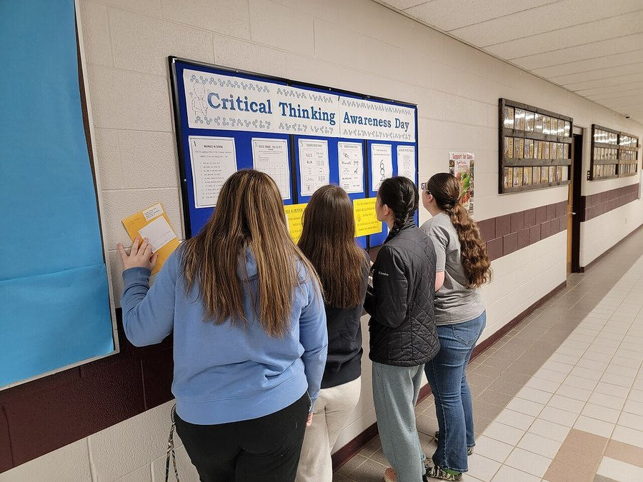
A Brain Protein Called SORLA May Shield Against Tau Tangles
New mouse research finds the protein SORLA reduces tau tangle buildup and brain atrophy, alongside its known role limiting amyloid. Here's what the study found.
Read more →Walking and Brain Health: How Daily Steps Protect Memory
No gym, no gear. Here's what the research says about how a daily walking habit protects memory and slows age-related brain shrinkage.
Read more →Active Recall: The Study Method That Actually Works
Rereading feels productive but ranks near the bottom of effective study strategies. Here's why testing yourself works so much better.
Read more →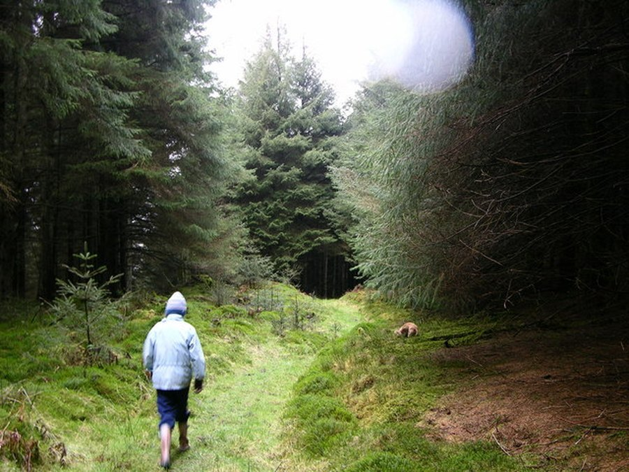
Heavy TV Watching in Midlife Linked to Smaller Brain Volume, Study Finds
A 24-year study of over 1,700 adults links frequent TV watching in midlife to smaller memory-related brain regions and more white matter damage. Here's what it found.
Read more →Bilingualism and the Brain: Does It Delay Cognitive Decline?
Speaking two languages is linked to a later average age of dementia diagnosis in several studies. Here's what the cognitive reserve research actually shows.
Read more →Cholesterol and Brain Health: What the Research Really Says
Cholesterol has a bad reputation, but your brain is one of the biggest cholesterol users in the body. Here's how the two actually relate.
Read more →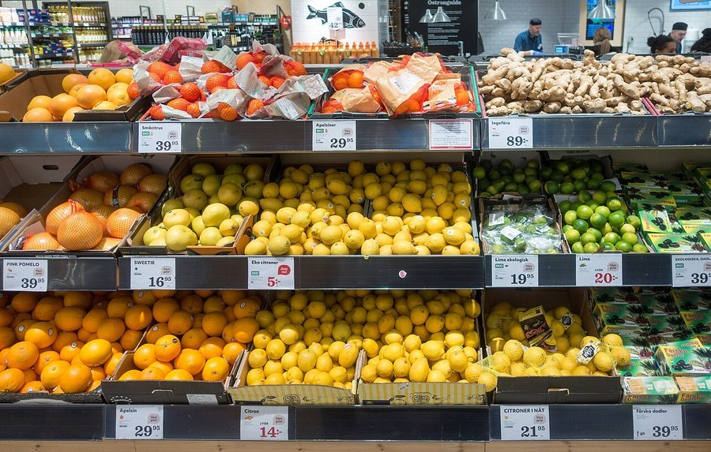
Protein Intake and Brain Aging: How Much Do You Need?
Protein gets talked about for muscle, not memory. Here's how the amount you eat as you get older may matter for your brain too.
Read more →Jet Lag and Memory: How Travel Disrupts Recall
That foggy, can't-find-the-word feeling after a long flight isn't in your head. Here's what jet lag does to memory, and how fast it clears.
Read more →Noise Pollution and Focus: How Sound Affects Concentration
Traffic, open offices, constant notifications. Here's what chronic noise actually does to attention and working memory.
Read more →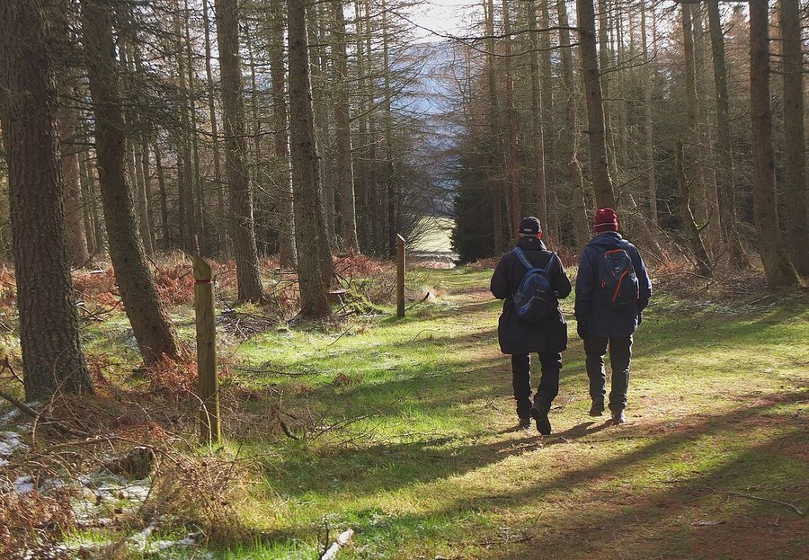
Sauna Use and Brain Health: What the Research Shows
Frequent sauna use keeps showing up in brain-health research. Here's what the studies actually found, and who should be careful.
Read more →Tinnitus and Concentration: Why Ringing Ears Affect Focus
Tinnitus competes for attention and disrupts sleep, and both hurt concentration. Here's the mechanism, the hearing loss link, and what actually helps.
Read more →Hormone Replacement Therapy and Memory: What Studies Show
HRT research on memory looks contradictory until you account for timing. Here's what the trials found, why age at initiation matters, and what to discuss.
Read more →Post-Surgery Memory Fog: Why Anesthesia Leaves You Foggy
Foggy thinking after an operation is common and usually temporary. Here's what causes it, how long it lasts, who's at higher risk, and what helps recovery.
Read more →Box Breathing for Focus: Does Slow Breathing Sharpen Attention?
Box breathing calms the stress response within minutes, and calmer usually means sharper. Here's how to do it, what the evidence supports, and its limits.
Read more →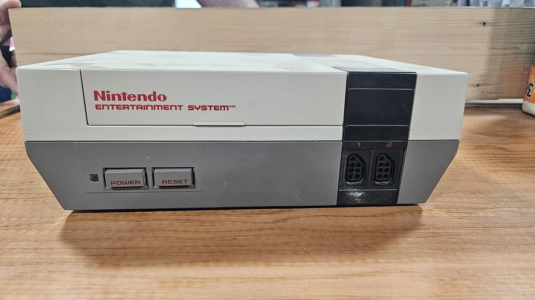
Video Games and Cognitive Function: What the Research Shows
Action games improve some visual and attention skills, but transfer to everyday memory is limited. Here's what the evidence supports and what it doesn't.
Read more →Chronic Pain and Memory: Why It's Harder to Concentrate
Pain competes for the same attention your memory needs. Here's why chronic pain causes forgetfulness, what role medication and sleep play, and what helps.
Read more →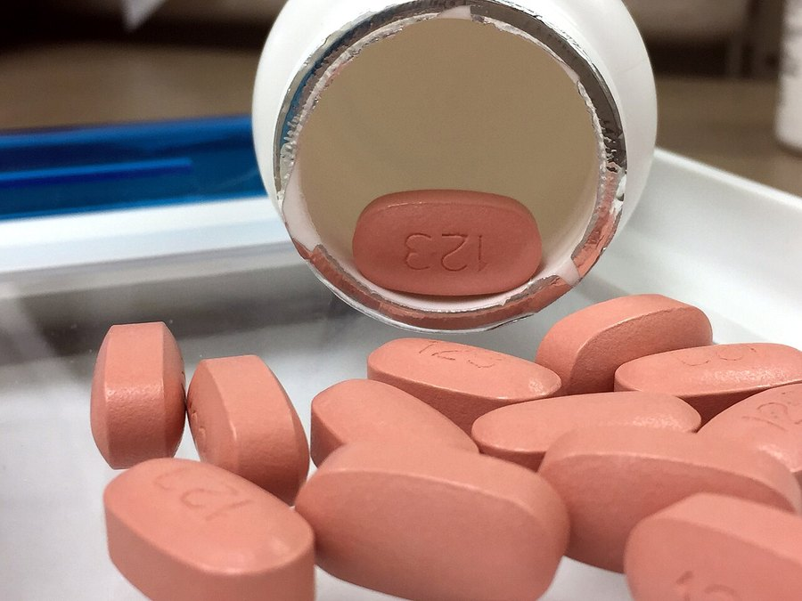
Allergy Medication and Memory Fog: The Antihistamine Link
Older antihistamines block acetylcholine as well as histamine, and that is the mechanism behind the fog. Here's which ones matter and what to ask about.
Read more →Concussion and Memory Loss: What to Expect and When to Worry
Memory gaps after a concussion are normal and usually temporary. Here's what recovery typically looks like, which symptoms are red flags, and what helps.
Read more →Handwriting vs Typing: Which Helps You Remember More?
Research suggests handwritten notes are remembered better, but the reason isn't the pen. Here's what the studies found and how to get the benefit either way.
Read more →The Blue Zones Diet and Brain Health: What Longevity Hotspots Eat
The Blue Zones share a dietary pattern that overlaps closely with diets studied for cognition. Here's what they eat, what holds up, and what to be sceptical of.
Read more →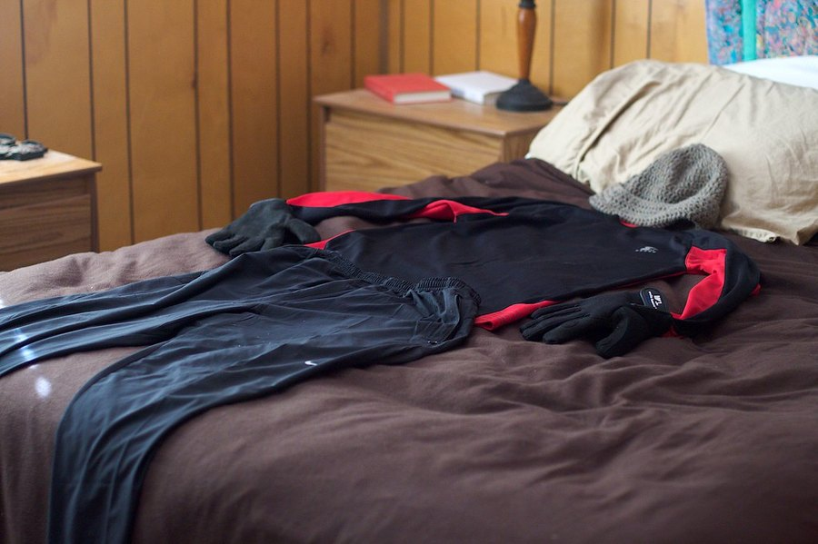
Sleep Apnea and Memory: How Broken Sleep Hurts Recall
Sleep apnea fragments the deep sleep your brain needs to file memories, and drops oxygen overnight. Here's how it affects recall and what treatment changes.
Read more →The Glymphatic System Explained: How Your Brain Cleans Itself
Your brain has no lymphatic vessels, so it clears waste another way, mostly during deep sleep. Here's what the glymphatic system is and why it matters for memory.
Read more →Ingredients & evidence
Zinc and Brain Health: Why This Mineral Matters for Memory
Zinc is packed into the hippocampus, the brain's memory-forming hub, yet deficiency is more common than most people think. Here's what the evidence shows.
Read more →CoQ10 and Brain Health: What the Research Says
CoQ10 fuels the mitochondria that power every brain cell, and natural levels decline with age. Here's what the research actually supports.
Read more →Probiotics for Brain Fog: Do They Really Help Focus?
Your gut and brain are in constant contact. Here's what the research on probiotics and "psychobiotics" actually shows about clearing brain fog.
Read more →Fish Oil vs Algae Omega-3: Which Is Better for the Brain?
Both deliver the DHA your brain runs on. Here's how fish oil and algae-based omega-3 actually compare on absorption, purity and dose.
Read more →Saffron for Mood and Memory: What Studies Suggest
Saffron has some of the more interesting early clinical data of any spice for mood and cognition. Here's what the trials actually found, and what they don't show yet.
Read more →
Curcumin for Memory: Does Turmeric Really Help the Brain?
Curcumin is a potent anti-inflammatory with one encouraging trial behind it. But a big absorption problem stands between the spice rack and your neurons. The honest picture.
Read more →
Creatine for Brain Health: Beyond the Gym
Best known for muscle, creatine also fuels the brain's energy system. The benefit is clearest under stress, sleep loss, or low baseline stores. What the research shows.
Read more →
Quercetin for Brain Health: What the Evidence Really Shows
This plant antioxidant in onions, apples and tea looks promising in the lab. The human memory evidence is thinner. Here's the honest picture on dosage and food sources.
Read more →
Citicoline for Memory: Benefits, Dosage & Evidence
One of the most studied nutrients for focus and recall — how it works and how much to take.
Read more →
Bacopa Monnieri: Benefits, Dosage & Side Effects
The Ayurvedic herb studied for memory — what works, the right dose, and what to watch for.
Read more →
The Best Vitamins & Nutrients for Brain Fog and Focus
B12, vitamin D, omega-3, magnesium, citicoline and more — what helps and how to use it.
Read more →
Omega-3 and Brain Health: DHA for Memory & Focus
How DHA & EPA support recall, the best food sources, and how much you need.
Read more →
Magnesium for Memory & Brain Fog: Benefits, Forms & Dosage
The best forms (incl. L-threonate), food sources, dosage and who benefits.
Read more →
Ginkgo Biloba for Memory: Does It Really Work?
One of the most tested herbal supplements has a more complicated track record than the marketing suggests. Here's what the research actually shows.
Read more →
Phosphatidylserine for Memory: Benefits, Dosage & Evidence
One of the few brain nutrients with an FDA qualified health claim. Here's what clinical trials show and how it fits a broader memory strategy.
Read more →
Lion's Mane for Memory & Focus: What the Research Says
The functional mushroom with the most compelling mechanism for memory support. Here's what trials show, the right dose, and realistic expectations.
Read more →
L-Theanine for Focus and Calm: Benefits, Dosage & Evidence
The amino acid in green tea that promotes calm alertness without sedation. Here's what the research shows and how much to take.
Read more →
Alpha-GPC vs Citicoline: Which Is Better for Memory?
Both are popular choline supplements for focus and recall, but they work through different pathways. Here's how to choose between them.
Read more →
Vitamin B12 and Memory: The Deficiency Link Explained
Low B12 is one of the most commonly missed causes of brain fog and memory slips. Here's how deficiency affects the brain, who's at risk, and what to do.
Read more →
Acetyl-L-Carnitine for Brain & Memory: Benefits, Dosage & Evidence
One of the few brain supplements with genuine double-blind trial data. Here's what it does, who benefits most, and how much to take.
Read more →
Vitamin D and Brain Health: Why Your Levels Matter for Memory
Vitamin D isn't just a bone nutrient. Low levels are linked to brain fog, cognitive decline, and higher dementia risk. Here's what the evidence shows.
Read more →
Rhodiola Rosea for Mental Fatigue and Focus
One of the few adaptogens with genuine clinical trial data. Here's what it does, when it works best, and the right dose to expect results.
Read more →
Caffeine and Memory: Helpful or Harmful? What the Science Shows
Caffeine sharpens short-term alertness and working memory, but the story gets complicated after that. Here's the full picture.
Read more →
Huperzine A for Memory: Benefits, Dosage & Safety
The natural acetylcholinesterase inhibitor from Chinese club moss. Here's what clinical trials show, the right dose, and who benefits most.
Read more →
Nootropics Explained: A Beginner's Guide for 2026
The word "nootropic" covers everything from green tea to prescription smart drugs. Here's what the research actually supports, and how to think about this category as a newcomer.
Read more →
Choline and Brain Function: Why This Nutrient Matters
It builds the actual chemical your brain uses to form memories, yet most adults fall short of the recommended amount. What choline does, and the best food sources.
Read more →Green Tea and Brain Health: L-Theanine, EGCG and Focus
Green tea pairs a modest dose of caffeine with L-theanine and antioxidant catechins. Here's what that combination actually does for focus and memory.
Read more →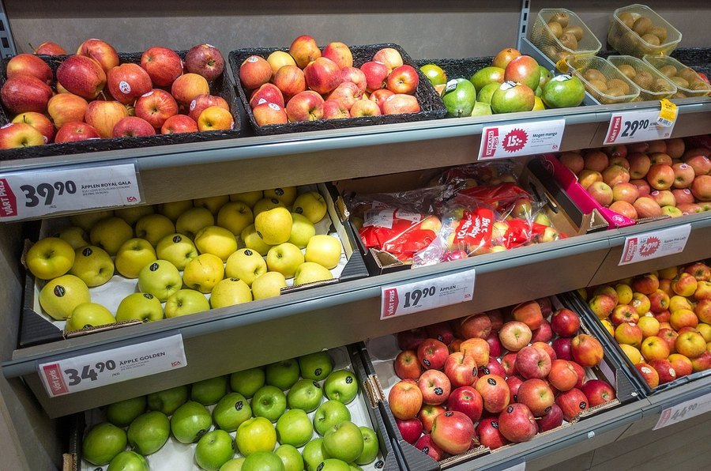
Dark Chocolate and Memory: The Flavanol Connection
Dark chocolate's cocoa flavanols are linked to modest brain blood-flow and memory benefits in small trials. Here's what the evidence really shows.
Read more →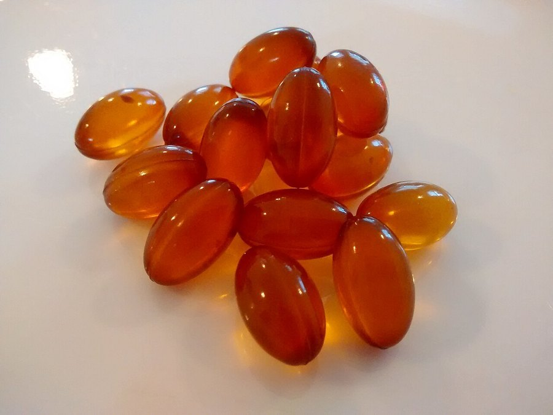
Ashwagandha for Stress and Memory: Does It Work?
Ashwagandha's best-supported benefit is calmer stress hormones, not sharper recall on its own. Here's what the evidence actually shows.
Read more →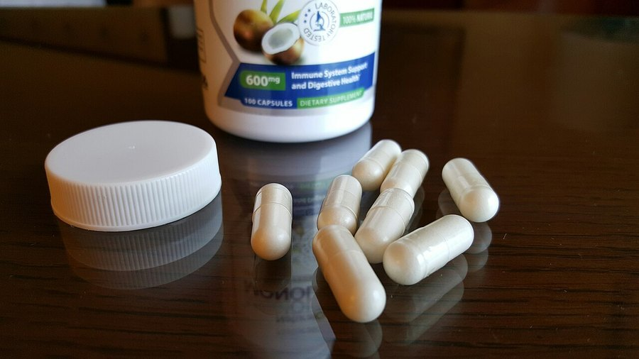
Omega-6 to Omega-3 Ratio: Why It Matters for Brain Health
Most Western diets run far heavier on omega-6 than omega-3. Here's what that ratio actually means for brain health, and how to shift it.
Read more →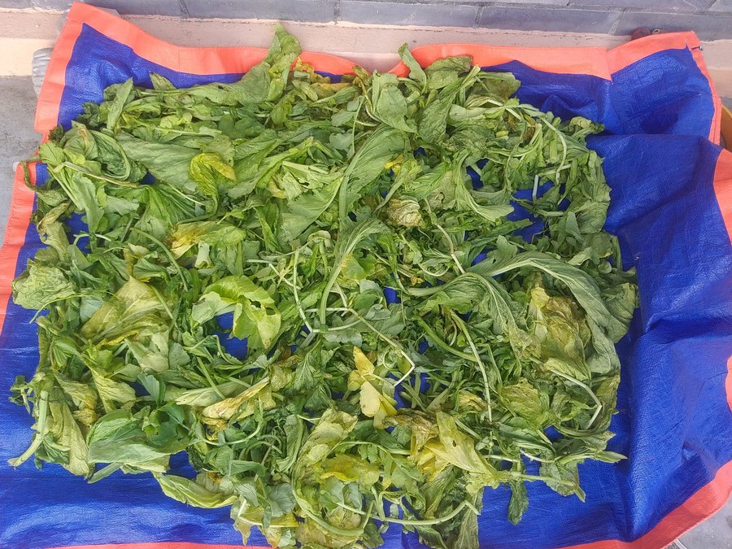
Folate and Brain Health: Why B9 Matters for Memory
Folate keeps homocysteine in check and supports the methylation your brain runs on. Here's what B9 does for memory, who runs low, and how much you need.
Read more →Creatine and Cognition: Who Actually Gets a Mental Benefit?
Creatine's cognitive effects are small on average but much larger in specific groups. Here's who responds, who probably won't, and what the research actually supports.
Read more →NAD+ Supplements and Brain Aging: What's the Evidence?
NR and NMN reliably raise NAD+ levels. Whether that helps memory or brain aging in people is a separate, much less settled question.
Read more →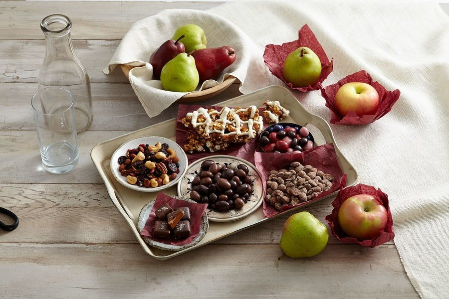
Magnesium L-Threonate for Memory: Does the Hype Hold Up?
It's sold as the only magnesium that reaches the brain. Here's what the dosage, safety and memory research actually shows.
Read more →PQQ for Brain Health: Benefits, Dosage and Safety
PQQ is a compound your cells use to build new mitochondria. Here's what the research shows about PQQ for brain energy, focus and safety.
Read more →Resveratrol and Memory: Does It Really Help the Brain?
Resveratrol rode the "red wine is good for you" wave to fame. Here's what the research actually shows about it and memory.
Read more →Copper Deficiency and Brain Fog: An Overlooked Mineral Link
Copper deficiency is rare, but it can cause real cognitive symptoms and nerve damage. Here's how copper supports the brain, who's at risk, and what helps.
Read more →Reviews & comparisons

Best Nootropics for Seniors in 2026: Top Picks Ranked by Evidence
Several natural compounds have genuine human clinical data for older adults. Here are the ones that actually hold up, and what to look for on the label.
Read more →
Best Supplements for Studying and Focus (2026): What Science Says
Most "study supplements" are marketing. A short list have real human clinical data. Here's which ones are worth taking and what they actually do.
Read more →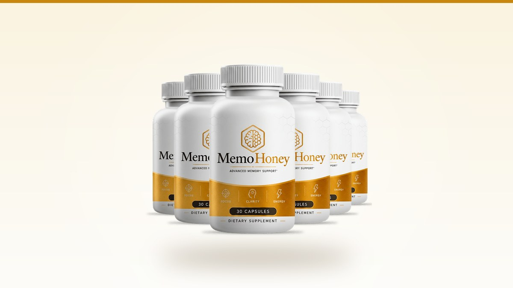
MemoHoney Review 2026: The Real Label, the Real Price, and Who It Suits
A blood-flow formula in one capsule a day. We pulled the actual supplement facts panel, checked every disclosed milligram against the research, and read the refund policy line by line.
Read more →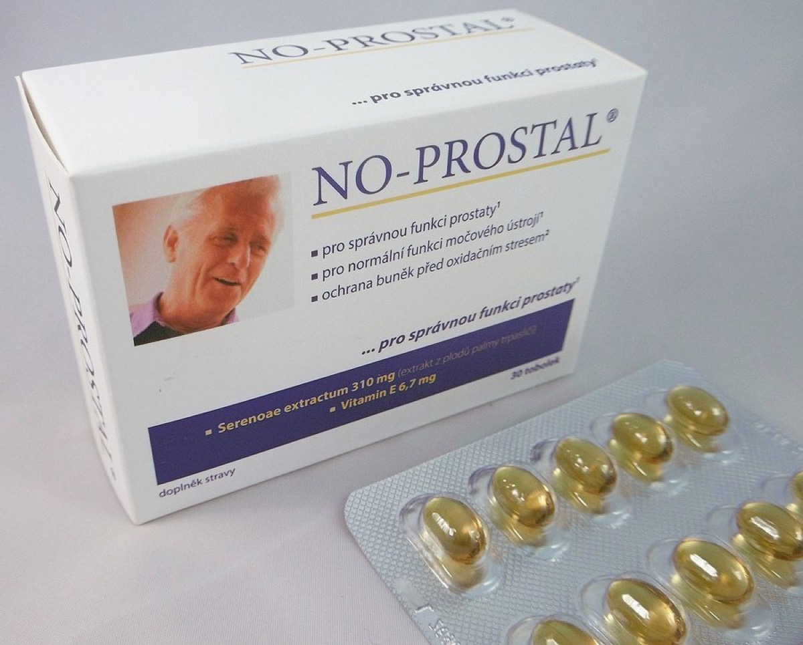
Memopezil Review 2026: Real Doses, Real Prices, and the Ads You Should Ignore
Every ingredient checked against the clinical dose, the true cost per day, and an honest look at the deepfake advertising problem — separated from the formula itself.
Read more →
Alpha Brain Review 2026: Honest Take + Better Alternatives
Onnit's flagship nootropic has a real clinical trial. But proprietary blends hide each ingredient's dose. Here's what the evidence shows and which formulas we rate higher.
Read more →
Focus Factor Review 2026: Does It Work? An Honest Look
Focus Factor has real nootropic ingredients but hides their doses in a proprietary blend. Here's what it contains and what our editors recommend instead.
Read more →The 5 Best Memory Support Formulas of 2026 (Ranked)
Our editors compared the leading formulas head-to-head. One was the clear #1.
Read more →
Prevagen Alternatives: Is It Worth It in 2026?
An independent look at Prevagen — and the better-value formulas we rate higher.
Read more →
Neuriva Review: Does It Work — and What's Better?
Ingredients, what reviewers report, drawbacks, and the alternatives we rate higher.
Read more →
Do Memory Supplements Actually Work? An Honest Buyer's Guide
Most don't, but the right kind can. The 3 things that separate a real formula from a scam.
Read more →
Prevagen vs Neuriva: Which Is Worth It in 2026?
They dominate the pharmacy shelf, but the ingredient science tells a different story. Here's what's inside each bottle and which, if either, is worth your money.
Read more →
Best Brain Supplements for Adults Over 50: What the Research Actually Shows
Most brain supplements don't have real clinical data. A short list do. Here's which ingredients are worth your money and what to look for on the label.
Read more →Bill Gates & brain research

Bill Gates on His Father's Alzheimer's — and What It Taught Him
Bill Gates Sr. had Alzheimer's. His son wrote about the experience and what it means for brain health.
Read more →
Why Bill Gates Is Investing Millions in Alzheimer's Research
His $100M bet on beating dementia — what it funds, and what it means for your brain.
Read more →
Is There a 'Bill Gates Brain Pill'? The Truth Behind the Viral Ads
No — and here's how the deepfake celebrity scam works, plus what actually helps.
Read more →
Bill Gates's Bet on Beating Dementia — and What It Means for You
The Dementia Discovery Fund, Diagnostics Accelerator, and the early-detection push — plus what you can do today.
Read more →
3 Brain-Health Lessons From Bill Gates's Push Against Alzheimer's
What the science he's backing reveals about protecting your own brain — three practical takeaways.
Read more →
The Early Alzheimer's Blood Test Bill Gates Helped Fund
How a simple blood draw may soon detect Alzheimer's a decade early — and the funding push behind it.
Read more →
What Bill Gates Predicts About Beating Alzheimer's
His publicly stated view on detection timelines and treatment prospects — what he's said, what he's funded, and what it means for your brain today.
Read more →
Inside the Diagnostics Accelerator Bill Gates Co-Founded
The 2019 program Gates co-funded to develop affordable blood tests for early Alzheimer's detection — what it does and why it matters.
Read more →
What Bill Gates Says About Preventing Dementia
Gates committed over $50M to Alzheimer's research. Here's what his focus on early detection means for your brain health today.
Read more →
Bill Gates and the Billionaires Funding the Fight Against Alzheimer's
Gates, the Chan Zuckerberg Initiative, and the late Paul Allen have each placed major bets on beating Alzheimer's. Here's what they're funding.
Read more →